Vanderbilt · Learning Series · ATD facilitator guide · print edition
Trust, Then Verify, the facilitator guide

Run of show
| Screen | Full (min) | Core (min) |
|---|---|---|
| Welcome / QR | 3 | 2 |
| Objectives | 2 | 1 |
| The Chancellor's charge | 3 | <1 |
| Agenda | 1 | skip |
| 01 · The cost of belief | 9 | 6 |
| Manifesto | 1 | skip |
| 02 · Know the failure modes | 11 | 8 |
| 03 · The Three Reads | 13 | 9 |
| 04 · Size the check | 11 | 7 |
| 05 · The Verification Lab | 14 | 10 |
| 06 · Make it a habit | 9 | 6 |
| Recap quiz | 4 | 4 |
| Capstone · My verification card | 6 | 6 |
| Glossary | 1 | skip |
| Closing · commitment | 5 | 1 |
| Total | 93 | 60 |
Audience
All Vanderbilt staff who use AI output in real work: coordinators, analysts, communicators, managers, anyone who ships AI-assisted text, summaries, or numbers. 8 to 24 works best (the plant-a-failure and ritual swaps run in pairs); scales larger with room votes. Prerequisite: Start Smarter or equivalent comfort with everyday AI tools; the traffic-light data rule from the AI courses is assumed and restated here. Learners who took Answers, Faster will recognize ask-anchor-check as the research special case of this skill.
Room setup
Projector plus presenter device; learners on their own devices via the Welcome-slide QR; movable seating for pairs. A whiteboard or flip chart helps: the worked example wants live underlining, and the failure-mode boxes fill fast. Virtual: breakouts of 2 for the plant-a-failure and ritual swaps. Set the norm in the first minute: outputs and tasks, never private information about people, and nothing typed is saved or sent.
Materials
- Projector or large display and the facilitator link open (this edition)
- Facilitator laptop with arrow keys or clicker; all notifications off
- Learner devices (BYOD) joining via the welcome-slide QR
- A few printed cheat sheets (cheatsheet.html) for anyone without a device
- Printed verification cards (worksheet.html) as the no-device and projector-failure fallback
- Whiteboard or flip chart with markers for the worked example underlining and the five failure-mode boxes
- One deliberately flawed AI paragraph of your own, printed or on a slide, as a backup exercise if devices fail
A week before
- Read this guide end to end, then run BOTH editions start to finish, doing every exercise, including building your own verification ritual honestly. You will be asked what output you accept unchecked; a real answer plays far better than a hypothetical.
- Build your own verification card in the capstone for an output you genuinely use. You'll show the structure, never the contents.
- Send the pre-work invite (template on this page) with the calendar invite: bring one recurring AI output you actually use, held privately.
- Decide your path now: Full (90-minute slot) or Core (60). Mark which pair drills you keep versus run solo.
- Skim SHRM's current AI research page and the latest Stanford AI Index highlights so the numbers in Guess the Number are fresh; the game's reveals carry the framing, but you should be able to say 'the research' with a straight face.
- Practice the worked example out loud once: read the flawed paragraph, then walk the three catches. It is the session's hinge and deserves a rehearsal.
The day before
- Test the projector with the facilitator link; confirm the notes rail is readable from where you'll stand.
- Scan the welcome QR from the back of the room with your own phone; it must land on the learner edition.
- Run one full round of the Verification Lab and one trainer so you can drive them without looking.
- Print 5 to 10 cheat sheets and verification cards.
- Re-read the tough-questions bank; say the 'doesn't checking cancel the time savings?' response out loud once. That question is coming.
30 minutes before
- Welcome slide up as people arrive; it does the enrolling for you.
- Close every other tab and app; silence the machine.
- Test arrow-key navigation and one interaction (run a Guess the Number round, open the lab).
- Write 'OUTPUTS AND TASKS, NEVER PEOPLE'S PRIVATE INFORMATION' where the room can see it all session.
- Draw five empty boxes labeled Hallucination, Staleness, Slant, Omission, Faked Math on the whiteboard; you'll fill them live in section 02.
When things go sideways
If Projector or the site fails mid-session: Teach from the whiteboard: the five failure modes, the Three Reads, and the stop rules all draw in seconds. Read the worked example aloud from your printed backup paragraph and have the room call the catches. The trainers become room votes on scenarios you read out; the capstone moves to the printed card. You lose polish, not learning.
If Learner devices can't join (wifi or filters): Run facilitator-only: the trainers play well on the projector with the room voting A/B/C by hands; the ritual builder and capstone move to paper. The lab works as a walk-through: read each move's three options aloud and have the room vote before you reveal the coaching.
If You're 10+ minutes behind by the Verification Lab (05): Declare the Core path silently: pair drills become solo passes, debriefs shrink to one voice, and the closing tightens to the fist-to-five plus commitment round. Never cut the lab, the ritual builder, or the capstone; they carry the session's practice objectives.
If Someone starts reading out a real output that names a person or contains private details: Protect the norm warmly: 'Hold that. Outputs and tasks, never private information about people. Describe the kind of output; skip the contents.' If it keeps happening, it usually means a real red-light practice is running on their team; restate the traffic light and move the specifics to a private follow-up.
If The room is skeptical: 'if I have to check everything, the AI saves me nothing': Don't argue; do the arithmetic out loud. The claim read on a page is ninety seconds; the SHRM cleanup tax is four hours a week. The budget section is the whole answer: most outputs need a small check or none, and the expensive misses cluster in the few that travel. Verification is how the time savings survive contact with reality.
If The room is the opposite: enthusiasts who insist their favorite model no longer hallucinates: Aim the enthusiasm at the data: incident counts keep hitting record highs even as models improve, because trust grows faster than accuracy. Then aim them at the lab; the invented-benchmark slot usually does the sobering for you. Better models make verification cheaper, and automation bias makes it rarer; the skill is holding the first without the second.
If Someone raises a real data-privacy concern mid-flight: Stop and honor it; this is the one interruption that outranks the agenda. Restate the traffic light (green public, yellow internal in approved VU tools only, red private information about people, never), confirm their case against it, and if it's genuinely ambiguous, park it with a promise to route it to the right owner rather than improvising policy from the front of the room.
If A learner disputes one of the game's numbers or asks for the exact study: Point at the sources by name: SHRM's workplace AI research for the four-hours figure, the Stanford AI Index for incident counts, both linked in the deck's Go deeper. Model the course's own method: 'Don't take my word; the links are in section 01, open them.' A facilitator who invites the source read is teaching the source read.
Tough questions, ready answers
Q: If I have to verify everything, doesn't that cancel the time AI saves?
Only if every check is a full check, which is exactly what the budget prevents. A brainstorm gets no check; an internal note gets ninety seconds; only the outputs that travel get all three reads, and those are the ones that were always worth minutes of care. The SHRM finding is the other side of the ledger: people who don't build the checking habit pay around four hours a week in cleanup anyway, at the worst possible time, after the error has traveled. Verification isn't the tax; it's the cheaper way to pay it.
Q: Models are improving fast. Won't hallucination be solved soon, making this course obsolete?
The error rate falls and the exposure rises, and the second is winning: the AI Index keeps recording more incidents, not fewer, because better models get trusted with more consequential work and checked less. And notice that only one of the five failure modes is hallucination. Staleness, slant, omission, and faked math are structural: any system summarizing the world can drop a caveat or frame a fact. The reads also work on human writing, which is why the skill outlives any model generation.
Q: My manager sends me AI-drafted documents. Am I supposed to verify my boss's output?
Verify claims, whoever drafted them, and frame it as protecting the document rather than auditing the person. 'I traced the enrollment figure before we send it up' is diligence in anyone's book, and the sign-off line from the lab works upward too: tell people what you checked. If your team adopts the miss log by task rather than by person, this stops being awkward at all; the log makes checking a shared routine instead of a judgment.
Q: How do I check output on a topic where I'm not an expert?
The claim read and the source read need no domain expertise: anyone can underline a date and open a citation. What needs expertise is the judgment call, and that's stop rule three saying something honest: if you couldn't tell a right answer from a wrong one, you are the wrong verifier for that output, and the check belongs to someone who could. Route it, the way you'd route a legal question to counsel. Knowing which outputs you can't verify is itself a verification skill.
Q: Isn't the slant read just politics? Facts are facts.
The slant read exists precisely because facts can all be true while the output still misleads. The worked example shows it: every surviving fact checked out, and 'long-overdue' was still the summary arguing a position its source never took. The three questions are mechanical, not political: what is this assuming, who is missing, what would the strongest opposite case say. They're the same questions a good editor asks, and putting them on a checklist means they get asked by every reviewer, whatever their temperament.
Q: What if my whole team already trusts AI output and I'm the only one checking?
Start with the ritual, not the lecture: verify your own outputs, use the sign-off line, and say 'caught one' out loud when a check fires. Catches are contagious in a way policy memos aren't; the first time your claim read stops a wrong number from reaching a dean, the team notices. Then propose the miss log as an experiment, framed on tasks, never people. And if you genuinely see red-light data going into unapproved tools, that's not a culture project; raise it with your supervisor, because the light is policy.
Copy-paste templates
Pre-work invite (paste into the calendar invite)
Subject: Before our Trust, Then Verify session. One thing to bring: one recurring AI output you actually use at work, a drafted email, a meeting summary, a report section, anything you'd normally accept and move on from. You will never be asked to share its contents; every exercise runs on outputs and tasks, and everything you type stays on your screen. Come knowing roughly how often you check that output before using it. That's it, no reading, no tools to install.
7-day pulse (send one week after)
Subject: One week later, did the first verified output ship? Three quick lines, reply whenever: 1) Did you run the Three Reads on the output from your verification card? 2) What did the reads catch, if anything? 3) How long did the check take? Replies come to me only. Not yet? The card still works; this note is your nudge.
30-day re-poll (send a month after)
Subject: Thirty days of verifying. Two questions, same scale as the room: 1) Fist to five, how confident are you now that you'd catch a wrong claim before it ships? 2) Is the 90-second check still running, and has any task hit a stop rule? Reply with a number and a line. The before-and-after pair is how we know this session did more than feel good.
After the session
Seven days out, send the pulse: 'Did the first verified output ship? What did the reads catch? How long did they take?' At 30 days, send the re-poll: the same fist-to-five confidence question from the close, plus 'is the ritual still running, and has any task hit a stop rule?' The count of first verified outputs actually shipped is the program's headline Level 3 metric.
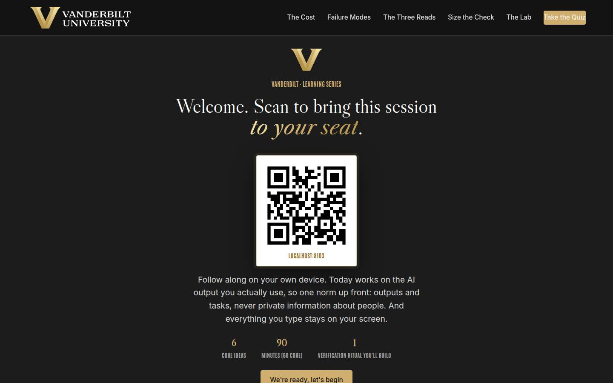
Welcome / QR Full 3 min · Core 2
Get every learner into the experience on their own device and set the norm that makes real-output material safe: outputs and tasks, never private information about people, and nothing typed leaves the screen.
Say
“Welcome. Point your camera at that code before we start. Today is about the skill that decides whether AI saves you time or quietly costs you more: catching its mistakes before they ship. We'll work on the AI outputs you actually use, so one ground rule for the next ninety minutes: outputs and tasks, never private information about people. And everything you type today stays on your screen; nothing is saved or sent anywhere.”
Do
- Have this slide projected as people arrive.
- Point at the QR and get phones up before you say anything else.
- Set the norm explicitly and early: outputs and tasks, never private information about people; typed exercises stay on their screens.
- Confirm by show of hands that most of the room has the site open before advancing.
Ask
“Quick calibration, shout it out: how many of you used AI for real work this week? And how many of you fully checked the last output before you used it?”
Expect:
- Nearly every hand up on the first question
- Most hands down on the second, with some laughter
- One or two proud checkers, usually people who got burned once
Respond: Name the gap warmly: 'That gap is the whole session, and it isn't a character flaw; fluent output is built to be believed. By the end you'll have a ninety-second answer to it.'
Validate: 80%+ of the room has the deck open on a device; the room can repeat the 'outputs and tasks, never people's private information' norm back to you.
Watch for: Anyone bracing for an anti-AI lecture or an AI cheerleading session. The frame that relaxes both: today is a quality-control skill for people who are keeping AI in their work, and the research is unusually practical.
Transition: “Here's exactly what you'll walk out able to do.”
Core path: Core: one scan prompt, the norm stated once, move on.
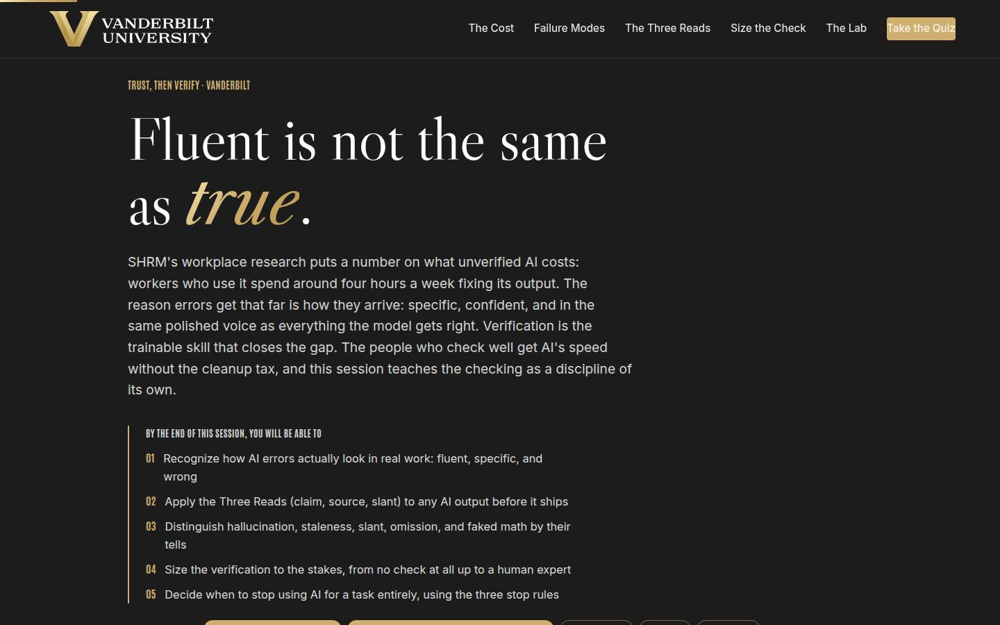
Objectives Full 2 min · Core 1
Set the contract: five capabilities, ending in one real recurring output carded for verification with a dated first move.
Say
“Five things by the end. You'll know how AI errors actually look, because they don't look like errors. You'll run the Three Reads, claim, source, slant, on any output in about ninety seconds. You'll name the five failure modes by their tells. You'll size the check to the stakes, from no check at all up to a human expert. And you'll know the three stop rules: the signs that AI should come off a task entirely. It all lands in one artifact: a verification card for an output you actually use, with a date on it.”
Do
- Read the five objectives briskly, in plain language.
- Land on the last one: this session ends with a REAL verification card, one output, one first move, one date.
- Name the sources once for credibility: SHRM's workplace research for the cleanup number, the Stanford AI Index for the incident trend, and the Three Reads as the method.
Validate: Learners can say what the capstone will be (one recurring output, one first move, one date).
Watch for: Tool questions arriving early ('which AI is most accurate?'). Park them: the session is deliberately tool-agnostic, and the reads work on any model's output, and on human writing too.
Transition: “Before the plan, one minute on why the university wants exactly this from you.”
Core path: Core: objectives 2 and 5 out loud; the rest on screen.
The Chancellor's charge Full 3 min · Core <1
Anchor the session in the institution's own plan: the one-sentence vision, the three focus areas in verification terms, and where checked work feeds the reputation flywheel.
Say
“Chancellor Diermeier's vision for this university is one sentence with no hedge in it: Vanderbilt will define the great university of the 21st Century and be it. The motto has always been the dare, Crescere aude, dare to grow, and daring work travels on facts somebody bothered to check. Reputation is the first word on the flywheel card: it attracts talent, funding, partnerships, and access, and an unverified number in a public report is exactly what burns it. Every output you catch before it ships keeps the university's name worth what it is, which is why the checking discipline you learn today is an all-staff skill.”
Do
- Read the vision sentence exactly as written, then pause; it lands better without commentary.
- Walk the three focus cards in one breath each, landing each at-your-desk line.
- Close on the flywheel card: reputation is the fuel, and verification sized to the stakes is how what leaves every desk protects it.
Validate: Learners can say what verification has to do with the university's reputation, in one sentence.
Watch for: Strategy fatigue: part of the room has heard the vision language elsewhere. Keep it in verification terms; the at-your-desk lines exist so nobody has to squint to find themselves in it.
Transition: “Six ideas, in a deliberate order.”
Core path: Core: under a minute: read the vision sentence, gesture at the three focuses, move on.
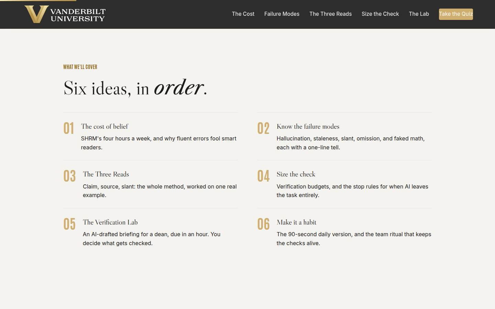
Agenda Full 1 min · Core skip
Show the arc once so learners can place each tool as it arrives: cost, taxonomy, method, sizing, practice, habit.
Say
“The arc is simple: first what unverified AI actually costs, then the five ways output goes wrong, then the method, the Three Reads. Then the judgment call of sizing the check to the stakes, a lab where you rescue a briefing under time pressure, and finally how the check becomes a habit you and your team keep.”
Do
- Walk the six items in one breath each.
- Point out the shape: the evidence (01), knowing the enemy (02), the method (03), sizing it (04), practicing it (05), and keeping it alive (06).
Validate: None needed; this is orientation.
Watch for: Don't teach here; every concept has its own slide.
Transition: “Start with the cost, because some of you think checking is paranoia and some of you think AI is unusable, and the data disagrees with both.”
Core path: Core: skip entirely; the deck's structure carries it.
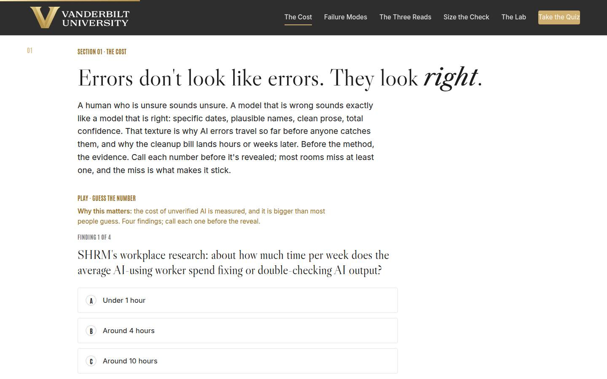
01 · The cost of belief Full 9 min · Core 6
Establish with guessed-at, missed numbers that unverified AI carries a measured cleanup tax, that errors arrive fluent and confident, and that checking is the trainable skill that keeps the speed.
Say
“Before any method, the evidence, and I want you to guess. SHRM's workplace research keeps finding that people who use AI spend around four hours a week fixing what it produced. Half a workday, every week. And here's why it gets that far: a human who is unsure sounds unsure, but a model that is wrong sounds exactly like a model that is right. Specific dates, plausible names, total confidence. The errors are dressed as answers. Four findings, call your number before each reveal.”
Do
- Frame the game: four findings on what unverified AI costs, guess each one before it's revealed. Missed guesses are the point; they stick.
- Run Guess the Number on devices, or as a room vote on the projector; call for guesses out loud before each reveal.
- After the reveal round, land the frame: the errors are fluent, specific, and confident, which is why smart people miss them.
- Run the quick check (why errors slip past careful readers), then the pair activity: the last time an AI output was wrong, and whether it was caught before or after it shipped.
- Count the before-versus-after hands out loud and connect the after-count to the four-hours figure.
Ask
“Think of the last time an AI output was wrong on something you touched. Was it caught before it shipped, or after it reached someone?”
Expect:
- Mostly after: a colleague, a recipient, or nobody caught it and it's still out there
- A few before-catches, usually from people who already check citations
- Someone admits they have no idea whether their outputs have been wrong
Respond: For the 'no idea' answer, warmly: 'That's the most honest answer in the room, and it's what unverified looks like from the inside; you'll have a detector by lunch.' For the after-majority: 'After is the expensive time. Everything today is about moving the catch to before.'
Debrief: The tax is measured, the errors are fluent, and the checking is learnable. Which means the question isn't whether to use AI; it's whether you're one of the people who can use it safely at speed.
Validate: Quick check correct; the before-after count lands visibly and the room sees its own cleanup tax.
Watch for: A learner litigating the exact SHRM methodology. Don't defend a single number; the case is the convergence: measured cleanup time, record incident counts, and decades of automation-bias research all pointing the same way. Park deep methodology questions and point at the linked sources.
Transition: “One sentence before the method, and it's the sentence this course exists to retire.”
Core path: Core: Guess the Number as a fast room vote, quick check stays, the pair story becomes one show of hands with no discussion.
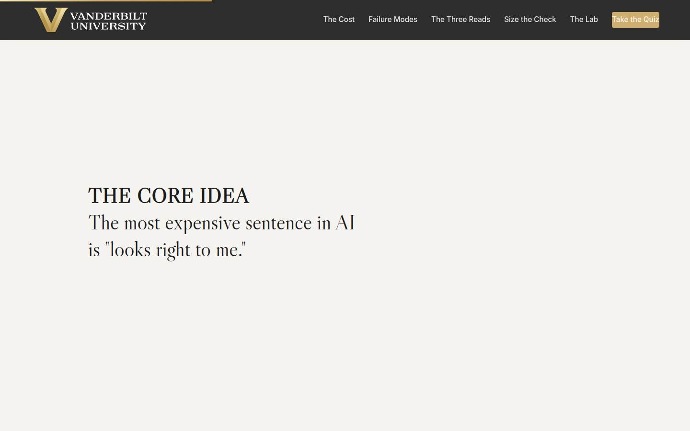
Manifesto Full 1 min · Core skip
One beat of stillness to lock the session's core idea before the method arrives.
Say
“The most expensive sentence in AI is 'looks right to me.'”
Do
- Let the line animate word by word. Say nothing until it finishes.
- Read it once, slowly, then advance.
Validate: None; this is pacing.
Watch for: The urge to talk over it. Don't.
Transition: “So what does wrong actually look like? It turns out there are five kinds, and each one leaves a fingerprint.”
Core path: Core: skip; say the line yourself as you pass it.
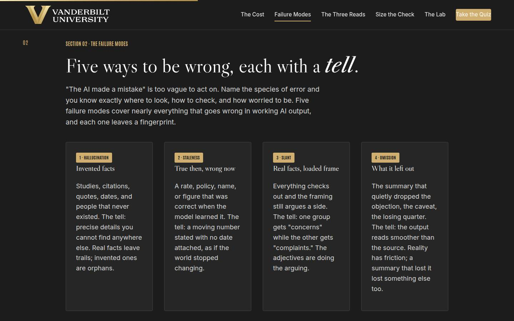
02 · Know the failure modes Full 11 min · Core 8
Install the five-mode taxonomy (hallucination, staleness, slant, omission, faked math) with a tell for each, so learners can diagnose an error and pick the matching check.
Say
“Saying 'the AI made a mistake' is like saying 'the patient is sick.' Useful diagnosis names the disease. Five failure modes cover nearly everything: hallucination, invented facts and citations, and the tell is precise details you can find nowhere else. Staleness, true then and wrong now, and the tell is a moving number with no date on it. Slant, real facts in a loaded frame, and the tell is adjectives doing the arguing. Omission, what got left out, and the tell is a summary smoother than its source. And faked math: any arithmetic the model did itself. It predicts numbers that look right; it does not compute. Learn the tells and your eye starts catching them on its own.”
Do
- Walk the five cards IN ORDER, filling the five whiteboard boxes with one example each as you go.
- Stress the payoff: naming the mode tells you which check to run, which is what keeps checking fast.
- Give the faked-math card an extra beat: models predict plausible numbers rather than computing, and any arithmetic they did gets redone. This one surprises rooms.
- Send them to Name the Failure: five outputs, name the mode. Fast, on devices.
- Run the plant-a-failure pair drill from Go deeper: each person writes one plausible sentence with a planted mode, partners swap and diagnose, best plant goes to the room.
Ask
“Which of the five modes has actually bitten you or your team? Tell me the mode, not the private details.”
Expect:
- Hallucinated citations or links that led nowhere
- Stale rates, old policy names, superseded org details
- A summary that dropped the one caveat that mattered
Respond: Tally the modes on the whiteboard as they're named: 'Notice the spread. Different modes bite different kinds of work, which is why section 04 will have you budget your checks by task rather than checking everything the same way.'
Debrief: Five modes, five tells, and a room full of people who have met most of them personally. Diagnosis is half the skill; the other half is a repeatable way to run the checks, which is next.
Validate: 4+ of 5 on the trainer for most of the room; planted failures are diagnosable by partners; the room can recite at least three tells unprompted.
Watch for: Learners treating hallucination as the only failure mode. Keep pulling the conversation to the quieter four: staleness, slant, omission, and faked math survive fact-checking vibes and cause most of the subtle damage. Also watch the plant drill for real private data sneaking into invented sentences; keep plants generic.
Transition: “The method has a name: the Three Reads. And it takes about ninety seconds once it's a habit.”
Core path: Core: cards fast against the whiteboard boxes, trainer on devices at full length; the plant-a-failure drill becomes a solo hunt through your own last output, 90 seconds.
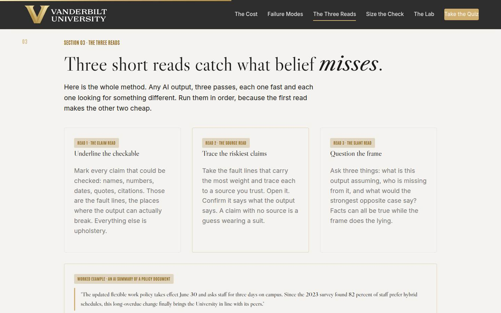
03 · The Three Reads Full 13 min · Core 9
Install the session's named method: the claim read (underline every checkable claim), the source read (trace the riskiest to an opened source), and the slant read (assumptions, absences, the opposite case), worked live on one flawed example.
Say
“Here is the whole method. Read one, the claim read: go through the output underlining every checkable claim. Names, numbers, dates, quotes, citations. Those are the fault lines, the only places the output can actually break; everything else is upholstery. Read two, the source read: take the fault lines carrying the most weight and trace each to a source you trust. Open it. Confirm it says what the output says, because a claim with no source is a guess wearing a suit. Read three, the slant read: three questions. What is this output assuming? Who is missing from it? What would the strongest opposite case say? Watch it work on a real example, because this paragraph reads perfectly, and two of its five claims are wrong.”
Do
- Walk the three cards in order, and stress the order: the claim read makes the other two cheap.
- Work the example on screen slowly. Read the paragraph aloud once, then run each read against it and let the catches land: the invented June 30 date, the stale 64-versus-82 figure, the 'long-overdue' framing.
- Point at the ratio: five claims, two failed, one frame stripped, all inside two minutes of reading.
- Send them to Find the Fault Line: five sentences, pick the first check.
- Run the room call from Go deeper: project the example again, the room calls fault lines, you underline, then vote on which claim gets checked first.
- If the room took Answers, Faster, name the bridge once: ask-anchor-check is this method specialized for research.
Ask
“From the trainer: what made the right answer the FIRST claim to check in each sentence? What did those claims have in common?”
Expect:
- They were specific: a number, a date, a named study, exact quoted words
- People would act on them: book travel, plan around a deadline, repeat the quote
- The vague options couldn't be checked at all
Respond: Land the definition: 'Checkable plus load-bearing. The claim that travels farthest and costs most if wrong gets the first trace. That one judgment, made in seconds, is what makes the whole method affordable.'
Debrief: Claim, source, slant, in that order, and the example just showed the yield: two real errors and one loaded frame caught in the time a coffee takes to cool. The method exists; what's left is knowing how much of it each output deserves.
Validate: 4+ of 5 on the trainer; the room can define 'riskiest claim' (checkable plus load-bearing, travels farthest) without prompting.
Watch for: Learners equating the claim read with rereading. The difference is the pencil: underlining forces a decision about every sentence, checkable or upholstery. Also watch for source reads that stop at 'the citation is formatted properly'; the read means opening the source, every time.
Transition: “Because running all three reads on everything would make AI pointless, and running none is how the four hours get paid. Next: sizing.”
Core path: Core: cards and worked example at full strength (this is the hinge), trainer on devices; the room fault-line call shrinks to one volunteer naming the first check.
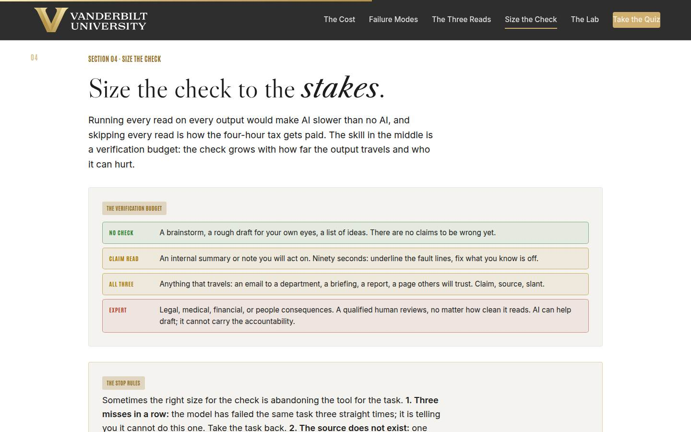
04 · Size the check Full 11 min · Core 7
Install the verification budget (no check, claim read, all three reads, human expert), the three stop rules for abandoning AI on a task, and the traffic light as the rule that outranks everything.
Say
“The skill of this section is a budget. A brainstorm for your own eyes gets no check; there are no claims to be wrong yet. An internal summary you'll act on gets the claim read, ninety seconds. Anything that travels, an email to a department, a briefing, a report, gets all three reads. And anything with legal, medical, financial, or people consequences gets a qualified human expert, no matter how clean it reads. Decide the size before you read the output, because a fluent draft will talk you down. Then three stop rules, for when the answer is to take the task back entirely: three misses in a row on the same task. A source that turns out not to exist. And judgment you couldn't check, because if you can't tell right from wrong there, no read will save you. One rule sits above all of this: the traffic light. Green, public, go. Yellow, internal, approved VU tools only. Red, private information about people, never. The light outranks every read in this course.”
Do
- Walk the budget rows top to bottom, and name the two failure directions: under-checking pays the tax, over-checking teaches people that checking is theater.
- Land the rule of thumb: decide the check size BEFORE reading the output, because fluent drafts talk you down.
- Walk the stop rules card: three misses in a row, the source does not exist, judgment you cannot check. Frame stopping as a verification verdict, not a failure.
- Walk the traffic light and be unambiguous: green public, yellow internal in approved VU tools only, red private information about people, never. The light outranks every read.
- Run the quick check (the red-light draft), then Check, Ship, or Stop on devices.
- Run the popcorn sizing round from Go deeper: real tasks from the room, hands-up votes, stop on splits.
Ask
“From the popcorn round: which task split the room's vote, and what stake did the two sides see differently?”
Expect:
- An internal summary some treated as ship-as-is and others as claim-read, splitting on whether anyone acts on it
- A report where the split was really about how far it travels
- Someone realizes a task they'd been shipping unread actually carries people consequences
Respond: Name the pattern: 'Every split was really a disagreement about travel or consequences, never about the prose. That's the tell that you're sizing correctly: the argument is about stakes. When in doubt, size up one row.'
Debrief: A budget that scales with stakes, three stop rules with a tally behind them, and a light that outranks it all. You now have the complete decision system; what's left is running it under pressure.
Validate: 4+ of 5 on the trainer; the quick check lands (the room can say why no read fixes a red-light input); learners can recite the three stop rules.
Watch for: Two drifts: the perfectionist concluding everything needs all three reads (point at the budget's top row and the theater problem), and the enthusiast treating stop rules as defeat (frame the tally as the model telling you its own limits). The red-light correction matters more than the flow of the room; make it kindly and completely.
Transition: “So let's apply some pressure. You have a briefing, a dean, and one hour.”
Core path: Core: budget and stop rules verbatim, traffic light at full strength, quick check and trainer on devices; the popcorn round drops to two examples.
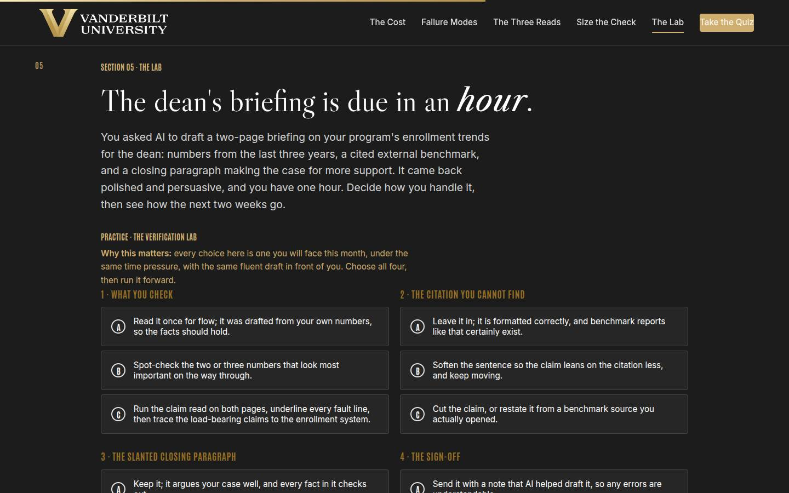
05 · The Verification Lab Full 14 min · Core 10
Give every learner a full felt rep of the method under time pressure: four verification moves on a real briefing, and a two-week outcome that rewards checking discipline rather than AI enthusiasm. The session's deepest practice block.
Say
“Here's the situation. You asked AI to draft a two-page briefing for your dean on enrollment trends: three years of numbers, an external benchmark with a citation, and a closing paragraph making your case for support. It came back polished and persuasive, and it's due in an hour. Four moves are yours: what you check, what you do with a citation you cannot find, how you handle the paragraph that argues a little too hard, and what you say when you sign it off. Choose honestly. Then the lab runs two weeks forward and shows you what happened in the rooms you weren't in. One warning from everything we've covered: the draft reads beautifully. That is not information.”
Do
- Set the scenario in one breath: a polished two-page AI briefing for the dean, numbers, a benchmark citation, a persuasive closing, one hour.
- Send them into the lab on devices: choose all four moves, then run it forward.
- Let people get their two-week outcome individually; the mid and weak tiers teach more than the strong one, so don't coach choices in advance.
- Ask for a show of hands by tier: who got the strong two weeks, who got burned. Have one burned learner read their coaching notes aloud; the room learns from the postmortem.
- Push the rerun: strengthen your weakest move and run it again. The delta between runs is the lesson.
- Run the sign-off debate from Go deeper: what do you owe the dean about your checking, in one sentence?
Ask
“For those who hit the mid or weak tier: which single move cost you, and what would you honestly have done at work before today?”
Expect:
- Trusting the citation because it was properly formatted
- The read-for-flow check: 'it was drafted from my own numbers'
- An honest 'before today I'd have shipped it as-is'
Respond: Treat that last answer as the room's win: 'That recognition is the whole lab. The weak tier isn't hypothetical; it's a description of normal practice, which is where the four hours a week and the correction emails come from. You now know the three moves that change the ending.'
Debrief: The lab's scoring is the session's thesis in miniature: the hour was always enough, and the endings were decided by whether the reads ran, whether the orphan citation left the document, and what the sign-off told the reader. Your next real briefing gets this exact treatment.
Validate: Every learner completes at least one lab run; most reach the strong tier on a rerun; the room can name the sign-off insight (what you checked is information the reader needs).
Watch for: Learners who game the lab by picking the maximal option everywhere without reading the coaching. The question that re-engages them: 'which of these would you honestly do on your busiest day?' That honest-day run is in Go deeper for a reason. Also watch clock discipline; this section has the least slack.
Transition: “One thing left: making sure this still happens in week six, on your busiest day, without you having to remember it.”
Core path: Core: one lab run instead of run-plus-rerun (rerun only for learners who hit weak tier), tier hands stay, the sign-off debate drops to one voice. This is the floor; never cut the lab entirely.
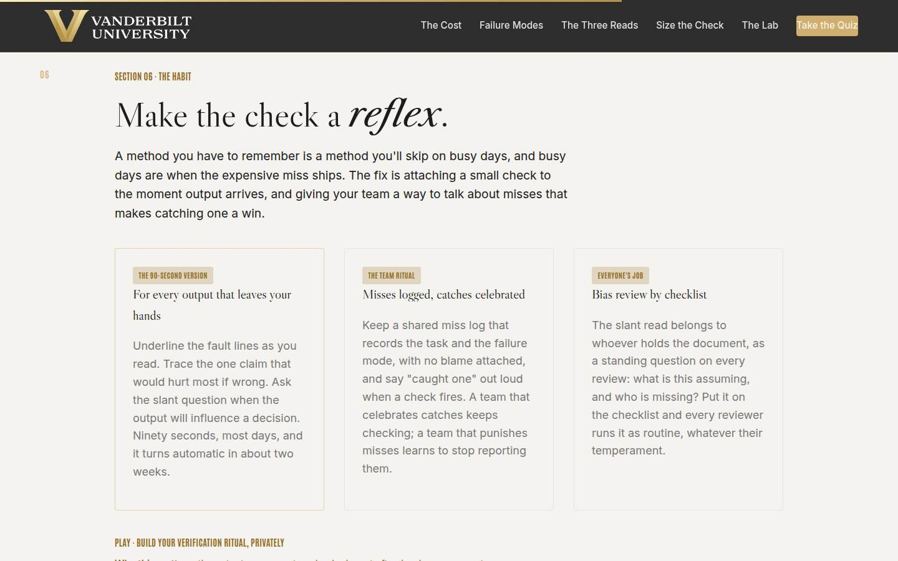
06 · Make it a habit Full 9 min · Core 6
Convert the method into a personal ritual (trigger, 90-second check, miss tally) and a team practice (blame-free miss log, the 'caught one' ritual, slant review as a checklist question), and get every learner a built ritual for their own most-trusted output.
Say
“Everything so far dies on a busy Tuesday unless it becomes a reflex, so here's the reflex. The 90-second version: fault lines underlined as you read, one trace on the claim that would hurt most, the slant question when the output will steer a decision. The trigger is the moment output lands, before you do anything else with it; two weeks of that and it runs on its own. Then the team layer. A miss log that records the task and the failure mode, never the person, because the log's job is finding patterns, and blame kills the data. And when a check fires, you say 'caught one,' out loud, like a win, because it is one. In a minute you'll build your own ritual, privately: the output you trust most is the one that gets to go first.”
Do
- Land the honest premise first: a method you must remember is a method you'll skip, and busy days are when the expensive miss ships.
- Walk the three cards: the 90-second version, the team ritual, and bias review as a checklist question that belongs to whoever holds the document.
- Stress the log's two rules: task and mode, never the person; and catches get celebrated out loud.
- Send them into the ritual builder: the output they accept unchecked, the worst plausible miss, the 90-second check. Repeat the privacy line before they type.
- Give the builder quiet time; field 2, the worst plausible miss, deserves a full minute.
- Run the pair test from Go deeper: would that check really catch that miss? Then draft the 'caught one' message together.
Ask
“What's the output you named in the builder, roughly, and what made you pick it? Kinds of output only, no contents.”
Expect:
- Recurring summaries: meetings, tickets, inbox digests, the things that arrive weekly
- Drafted communications that go out under their own name
- Someone picks the output they LEAST suspect, having realized that's the point
Respond: Reward that last instinct: 'Exactly. The output you'd never think to check is the one automation bias has fully claimed. High trust plus zero checking is where the next miss is scheduled, and your ritual just moved the catch to before.'
Debrief: A trigger, a 90-second check, a tally, and a team that treats catches as wins. That's the whole discipline, sized for real weeks. What's left is proving you have the knowledge, and then putting a date on it.
Validate: Every learner has a built ritual with a named output, a named worst miss, and a check that would plausibly catch it; the pair test confirms the match.
Watch for: Rituals with vague checks ('I'll review it more carefully'). Push to mechanics: which read, against what opened source, at what trigger moment. And watch for worst-miss answers that reveal red-light practices; handle those privately and kindly after the session.
Transition: “Quiz first, then the card that leaves the room with you.”
Core path: Core: cards in two minutes, builder stays at full length with its quiet minute protected; the pair test becomes a 30-second self-test against the worst miss.
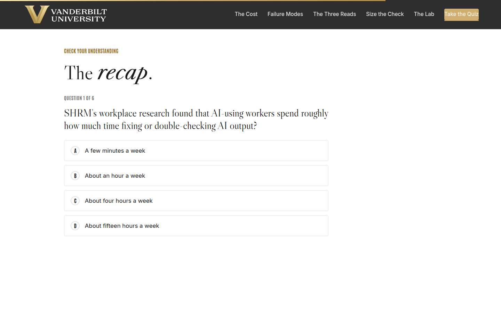
Recap quiz Full 4 min · Core 4
Score the session's knowledge against the five objectives before the capstone applies it (Kirkpatrick Level 2).
Say
“Six questions, one per big idea. This is the systems check before you write the card that leaves the room with you.”
Do
- Everyone takes it on their own device, all six questions.
- Ask for hands on 5-or-better; celebrate briefly.
- For any question the room visibly missed, do a 30-second reteach from the relevant slide, not a lecture.
Validate: Room mode at 5/6 or better. The quiz maps onto the objectives, so misses tell you exactly what to reteach.
Watch for: Racing. Frame it as the systems check before the card, not a race.
Transition: “Now the only part of today that changes anything.”
Core path: Core: keep at full length; this is the objectives' evidence.
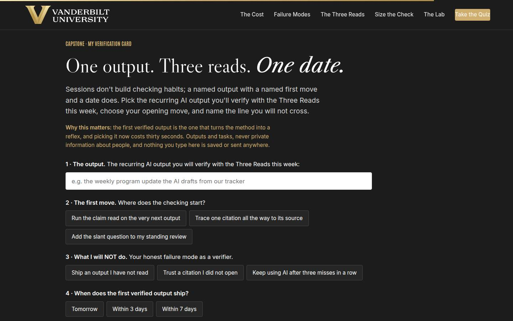
Capstone · My verification card Full 6 min · Core 6
Convert the session into one dated commitment: one recurring output, one first move, one named line not to cross, and a dated first verified output. The transfer artifact and the Level 3 seed.
Say
“Sessions don't build checking habits. A named output with a named first move and a date does. Pick the output, the real one, the one that recurs. Choose where the checking starts: the claim read on the very next one, one citation traced all the way to its source, or the slant question added to your standing review. Then the honest field: what you will NOT do, because you know your failure mode; shipping an output you didn't read, trusting a citation you didn't open, or pushing on after three misses in a row. And the date: when does the first verified output ship? A named output with a named first move and a date is a habit starting. Everything less is a good intention.”
Do
- Frame it: sessions don't build checking habits; a named output with a date does.
- Repeat the privacy norm before anyone types: outputs and tasks, nothing saved or sent.
- Give quiet time; this is individual work. Circulate for stuck learners: the ritual builder from section 06 is the raw material, and the recurring output they named there is usually the right card.
- Point at field 3, what you will NOT do, as the honest one: every person in the room has one of these three failure modes.
- Push the build moment, then the close-the-loop line: after the first verified output, write down what the reads caught and how long they took.
Ask
“What's most likely to make you skip the first verified output, and what's your plan for that obstacle?”
Expect:
- No time; the deadline will win
- The output will look clean and checking will feel pointless
- Forgetting entirely once the week starts
Respond: No time: 'The claim read is ninety seconds against a four-hour weekly tax; the math forgives you exactly once.' Looks clean: 'That is the automation-bias voice, and you now know its name; the check size was decided before you read it.' Forgetting: 'Put the reminder on the output's arrival time right now, before you leave this slide.'
Debrief: One recurring output is about to get read like it matters, by someone who knows exactly where it can break. That's how checking cultures start: one person, one output, one caught error at a time.
Validate: Every learner builds a card (all four fields). The card plus the 7-day pulse plus the 30-day re-poll is the evidence chain.
Watch for: Grand cards ('verify everything from now on'). Push to ONE recurring output with a real cadence. And date-dodging: 'soon' is not a commitment; help them pick the actual next arrival of their output on the spot.
Transition: “Reference shelf in one breath, and then the send-off.”
Core path: Core: protect at full length; never cut the capstone.
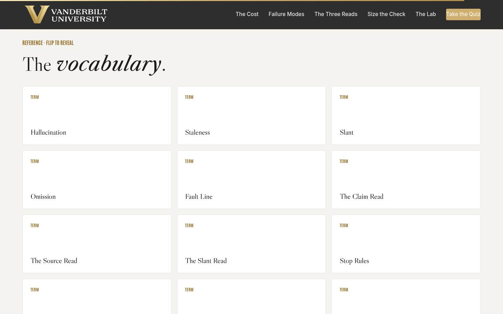
Glossary Full 1 min · Core skip
Signpost the reference layer; it lives here for after the session.
Say
“Every term from today lives here as flip cards, including 'automation bias,' for the next time an output has been right so many times that nobody's reading it anymore.”
Do
- Flip one card on the projector (Automation Bias is a good pick; it names the force everyone just felt in the lab).
- Tell them it's all here whenever they need the vocabulary back.
Validate: None; reference material.
Watch for: Don't tour all twelve cards; one flip makes the point.
Transition: “Last slide. One output left to verify: the next one.”
Core path: Core: skip; point at it verbally from the closing slide.
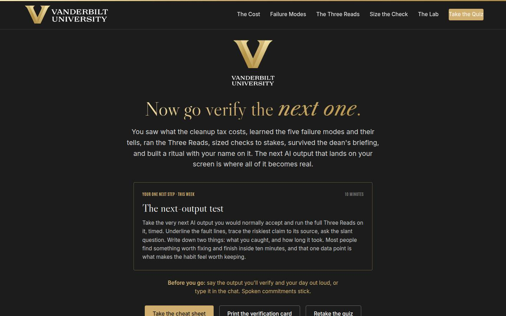
Closing · commitment Full 5 min · Core 1
Convert cards into spoken commitments, capture the Level 1 reaction check, and point at the follow-up chain.
Say
“The whole session in one breath: the errors arrive fluent, the five modes have tells, the Three Reads catch them, the budget sizes the check, the stop rules know when to quit, and the ritual keeps it alive on your busiest day. You have a card. Before you go: your output, and your day. Say it out loud; spoken commitments stick.”
Do
- Read the featured card: the one next step is the next-output test, the full Three Reads on the very next AI output, timed, with the catch and the clock written down.
- Run the fist-to-five (Level 1): 'On a fist to five, how confident are you that you'd catch a wrong claim before it ships?' Scan and note the number; the 30-day re-poll asks it again.
- Run the commitment round, popcorn style: output and day, out loud or in chat.
- Point at the cheat sheet and verification card buttons; the cheat sheet is built to sit next to the keyboard.
- Tell them the 7-day pulse is coming, then land the last line and stop on time.
Ask
“Around the room, one line each: your output, and the day the first verified one ships.”
Expect:
- 'The Friday meeting summary, this Friday'
- 'The monthly report draft, Thursday'
- Someone commits to tracing one citation in something already sitting in their inbox
Respond: Thank each one, no commentary. For the citation-tracer, warmly: 'Good instinct. Open it before you leave the building; a traced citation in the next hour beats a planned one next week.'
Debrief: The session's success metric isn't in this room; it's the 7-day pulse: how many first verified outputs shipped, what the reads caught, and how long the catching took.
Validate: Fist-to-five mostly 3+ (Level 1); a majority state an output and a day out loud or in chat. Count both; with the pulse and the 30-day re-poll, that's your evidence chain.
Watch for: Cards that quietly skipped the date. The commitment round catches them: no day, no commitment; help them pick one on the spot.
Transition: “Go read the next one like it matters. And when you catch something, and you will, say it out loud: caught one.”
Core path: Core: fist-to-five plus a fast commitment round; the ending survives every cut.
Generated from facilitator/notes.json. The on-screen facilitator edition lives at ./ alongside this guide.